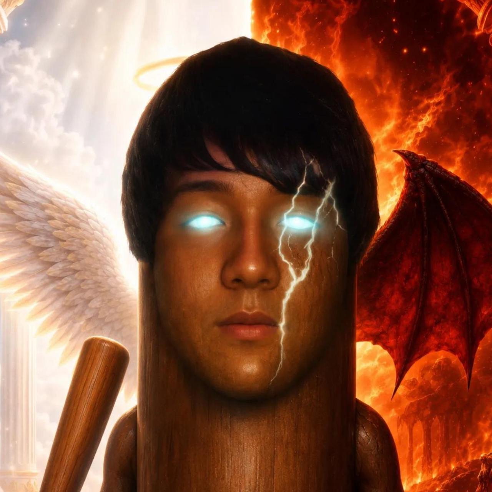
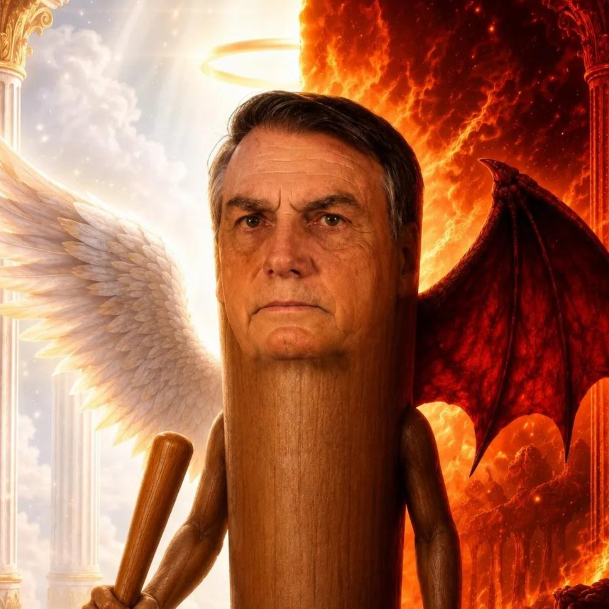
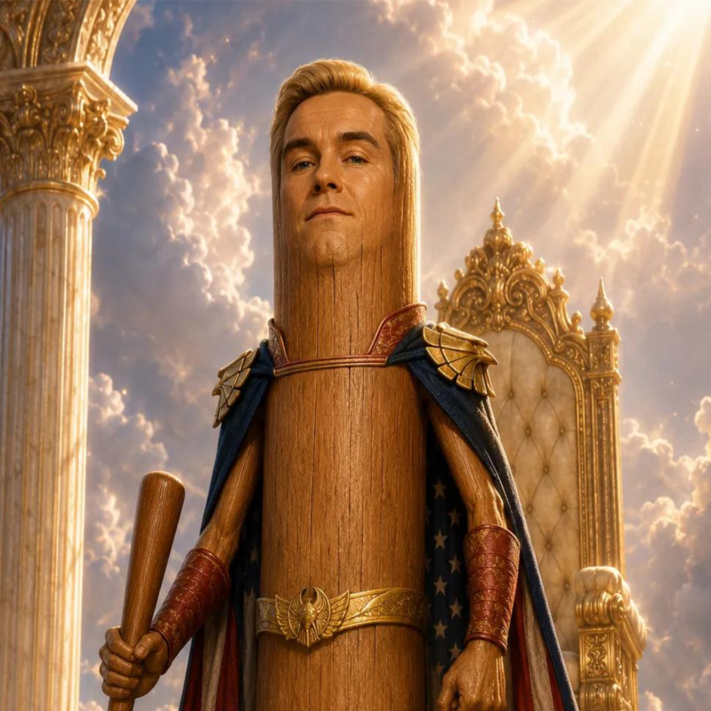
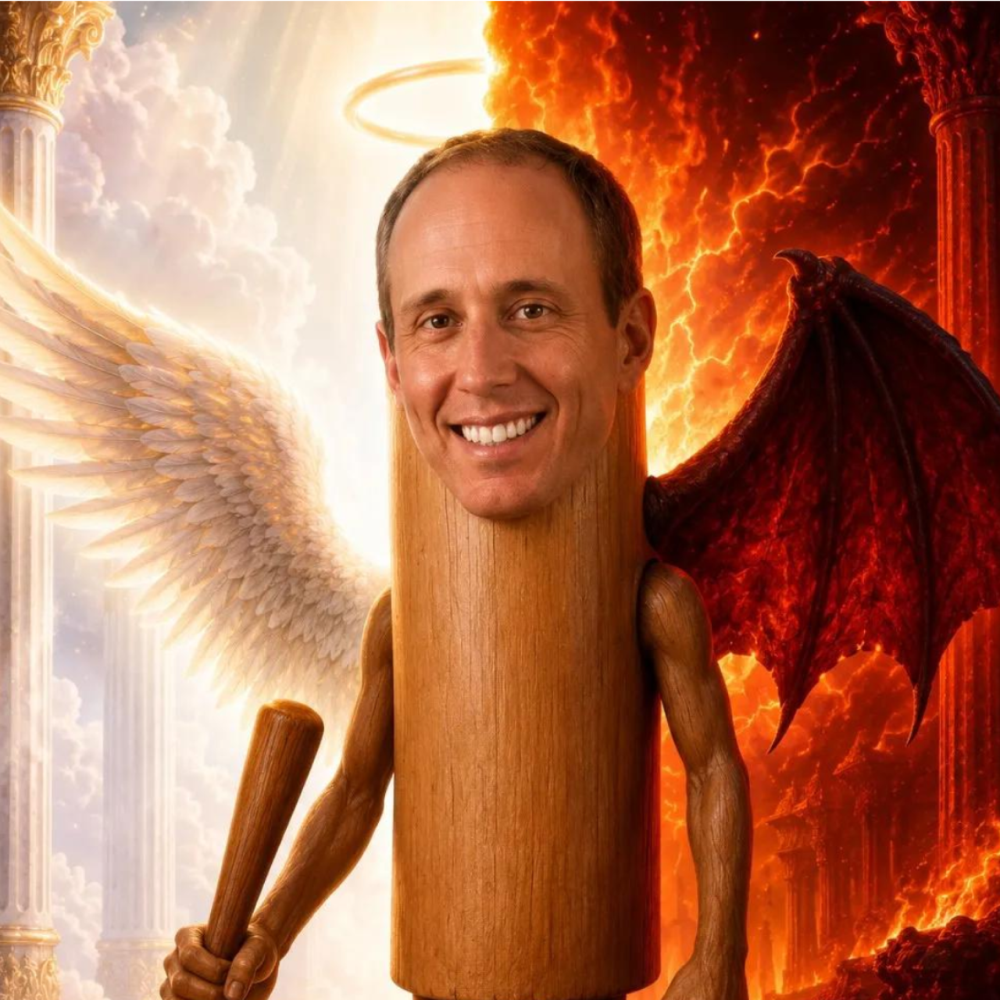
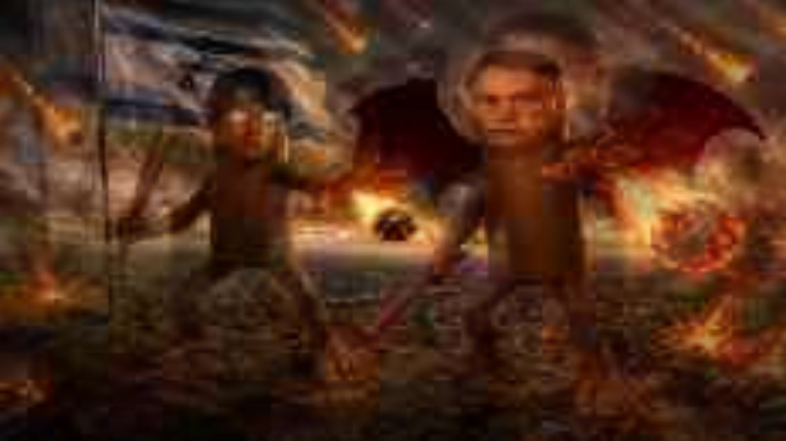
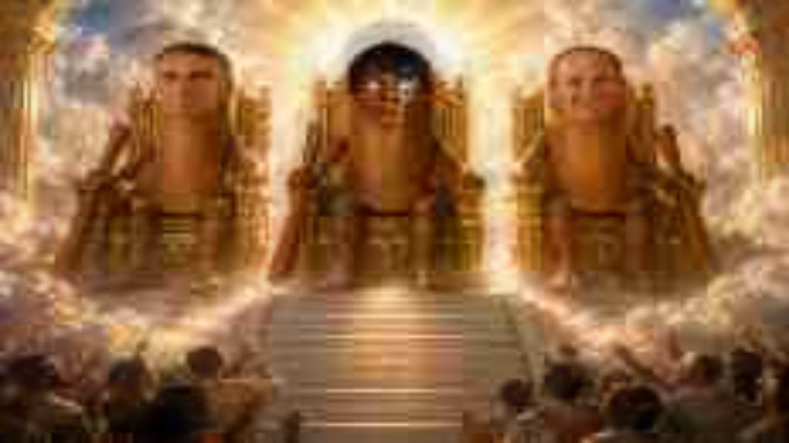
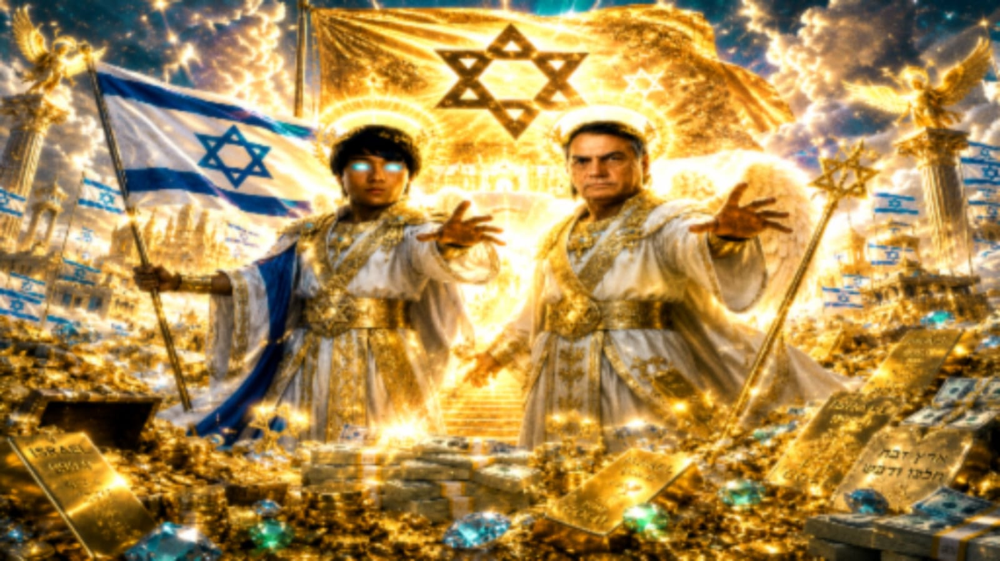
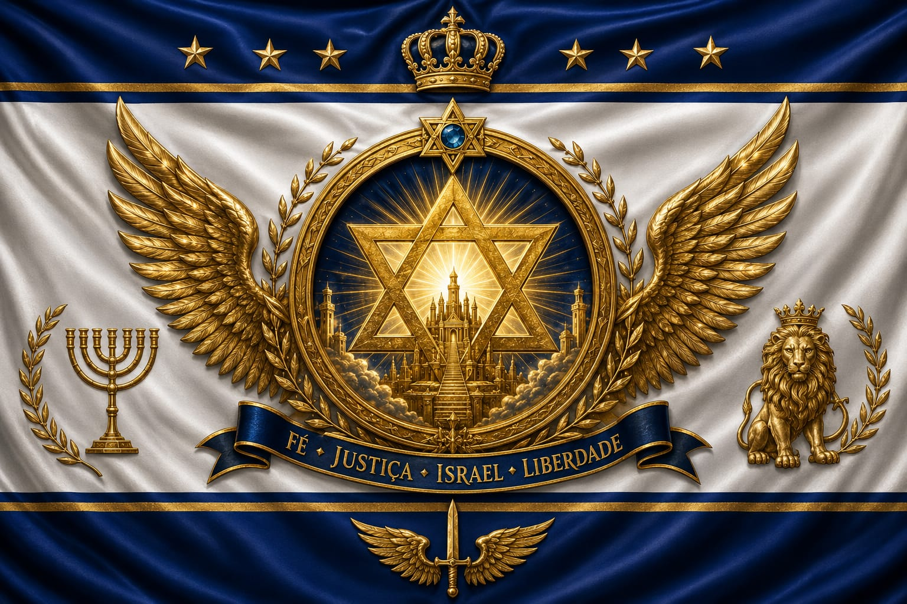
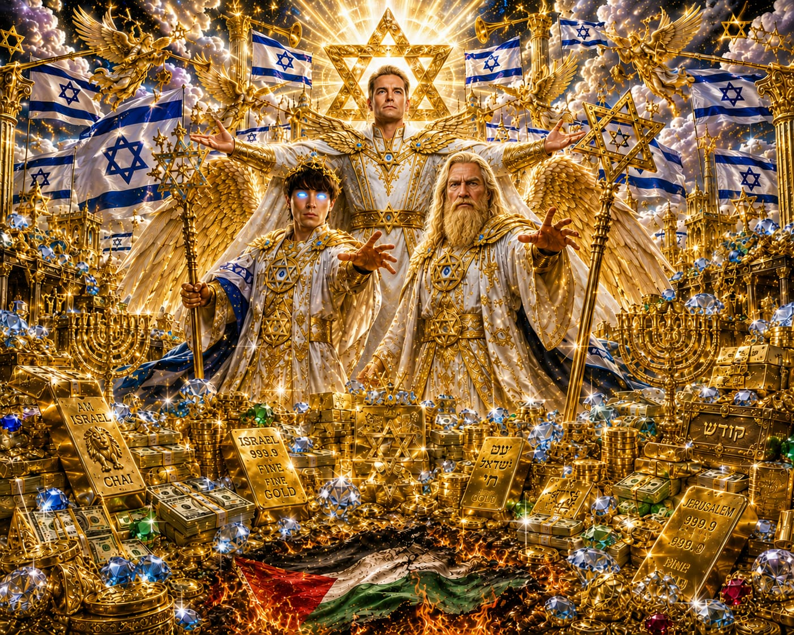

Em um mundo dominado pelo caos, corrupção e trevas Deus levantou três escolhidos para restaurar a verdade a justiça e prosperidade de Israel e das nações. Kauan, ainda jovem, foi o primeiro a ser escolhido. Desde pequeno, ele via além do que os olhos humanos podiam ver. Dotado de dons celestiais e guiado por visões divinas, Kauan foi treinado nos caminhos da luz para ser um guerreiro espiritual, capaz de discernir o bem do mal e proteger o povo escolhido. Seu coração é puro, sua fé inabalável e sua missão apenas começou. Jair Messias Bolsonaro, ungido por Deus e amado por milhões, foi o líder terreno escolhido para governar com mão firme e coração reto. Ele enfrentou o sistema corrupto, lutou contra as forças das trevas e fez de Israel sua maior aliança. Mesmo perseguido, nunca se curvou. Seu legado é eterno, e sua missão na Terra foi apenas o começo de algo muito maior. E acima deles, está o Capitão Pátria, enviado diretamente do céu.

Líder espiritual e guerreiro da luz, Kauan foi escolhido por Deus para liderar a resistência contra as forças das trevas.

Líder terreno e defensor da pátria, Jair Messias Bolsonaro foi ungido por Deus para governar com mão firme e coração reto.

Líder espiritual e guerreiro da luz, Pátria foi escolhida por Deus para liderar a resistência contra as forças das trevas.

O líder carismático que inspira o povo com inteligência, coragem e esperança em meio ao caos.





A criação da Aliança Celestial ©, é uma obra fictícia desenvolvida com total consentimento de Kauan Rodrigues
Desenvolvido por:
Kalleb Rafael
Ravi Mateus